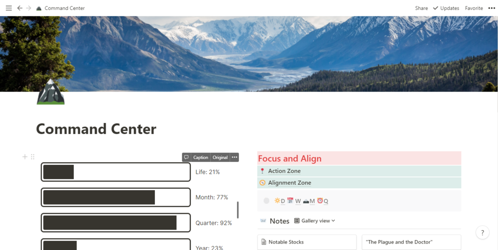
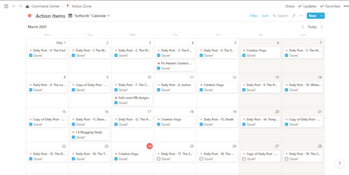
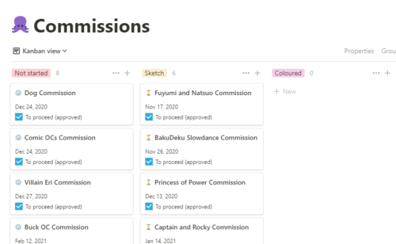

Notion - the ONE productivity app I recommend
Mar 24 '21 • Written by Yassen Shopov
📖 9 minute read
When I was in 10th grade, I think, I kind of stumbled upon some YouTube niche, which stuck with me forever since - the self-improvement community. I fell into a rabbit-hole of books, videos, and most importantly - apps. God.
So.
Many.
Apps.
It started off with just a To-Do list app, then I also installed a habit tracker to track my workout progress, then I installed Evernote to get all my notes in one place, but then Google Calendar also became a thing, so of course, I had to put all my events there. And so on and so on, Not to say any of these apps is bad, I still use some of them even, but what they really lacked was uniformity, the ability to have everything in one trustworthy, customizable system.
This is where Notion came to the rescue.
Notion managed to grab my attention by the pure fact that it had all the best parts from those different apps. It has a Calendar feature, it can serve as a To-Do list, it can store your info (one of its best qualities if you ask me), and much more. But the best thing about it is how much you can personalize it, to the extent where two different users may have completely different-looking interfaces. Let’s have a sneak peek at mine.
This is the first page I see when I open the app and from there I can go into the relevant ones to start my day. The Action Zone, to the right, I’ll show you more of later on, because it is the most accessed place in my Notion - it is where I keep all my tasks, including but not limited to university to-do’s, my posting schedule for instagram and other sites, as well as personal tasks.
The progress bars to the left are a silly extension I plugged in which tracks how much of the month, quarter, and year is left (and how much of my life has passed, gulp). Notion is full of such cool features, which makes each time I access it a pleasure. Every page can have its own cover art and emoji to mark it, making the whole browsing experience much more visually interesting. Of course, Notion supports a light and a dark mode, which you can change up at any point (Just click Ctrl+Shift+L, thank me later).
Other important features visible above are the Notes section and my Daily/Weekly/Monthly Tracking. The notes page is the one where speed of access matters, I need to be able to get my idea from my brain onto paper (“digital paper“) as soon as possible, otherwise there is a big chance it’ll get lost in the void of my mind. The tracking system is a simple table (imagine an Excel spreadsheet, but prettier), which I can see one row of every day, where I log some info that is important to me - sleep time, weight, daily coffee intake, daily highlights (the more zen of you would appreciate). In the end of the week, I make a weekly review, then a monthly review at the end of the month, and so on, so I can keep track of my goals, how much progress I’m achieving on them and what I need to fix. This helps me stay on top of things, and it gives me flexibility to change my plans from the top level down to the details.
Now, you may be wondering, how would such an app be helpful to a more creative person? For sure it is useful if you’re a business guy or gal, or if you just want to keep track of University stuff, but can it help me be creative? Well, if it couldn’t, I wouldn’t be writing this article.
I will show you 3 ways in which I manage my creative flow with Notion, and how you can do so as well.
My Posting Schedule
This is something I set up at the beginning of every month, been doing that for a few months now, and it really gives me clarity and enables me to spend less time thinking “What should I draw?“ and instead focus my time on actually drawing.
As you can see, it can function as a checklist as well, and I have ticked off all the drawings I’ve done already, which is also reflected in the global task list, so I don’t have to tick off the task a hundred times. What is more, and what can’t be seen from the picture is that inside the task, a whole new page can be accessed. Inside each drawing “task“, I can enter the details, including any reference pictures, written descriptions, even hashtags, when I plan to post the work on Instagram.
Commissions and Artworks
This is one of the oldest pages on my Notion app, and it was one of the first I got functioning well, ever since then I have just been tweaking it here and there. The commissions’ page is again, a table with all the relevant info for a commission, including the email of the buyer, the price, the details, and most importantly, the stage at which the drawing currently is. I personally do a commission in 3 stages (rough sketch, colored drawing, and final rendered illustration).
The most important aspect of Notion, at least for me, is that you can interchange between different views of the same database. As is the case with the commissions’ database, it can be viewed as a table, but it is much more useful as a Kanban board - a list of the tasks by the order of their completion, which can be moved from one phase to the other. When I finish coloring a commission I simply drag and drop it into the “Coloured“ section.
Another important aspect is the “Money“ section. It is important as a freelancer to keep track of your expenses, so I log the price of every piece I do, alongside details such as PayPal taxes, and tips I receive, etc.
Blog Posting
For the last part, this blog itself is the product of a few systems I use to gather ideas and content, and mainly to produce the text itself into its coherent end form (which this hopefully is). As with the commissions’ database, the blog goes through different stages, and Notion allows you to access the info from any device, so this makes writing this blog from my phone, and editing it from my laptop, for example, that much easier. I won’t attach a picture as to not spoil future blog posts I have, but the idea and outlook are pretty much the same as with the commissions above.
I hope you found this article useful, and if you have any Notion-related questions, shoot them in the comments, I’ll be sure to answer! ^^
[11:25]
by Thomas Frank